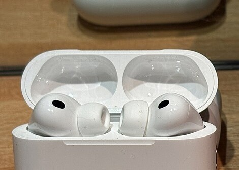
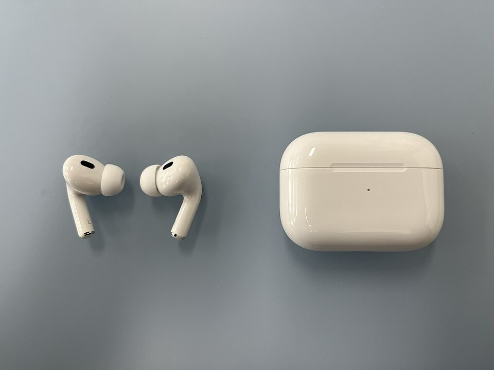
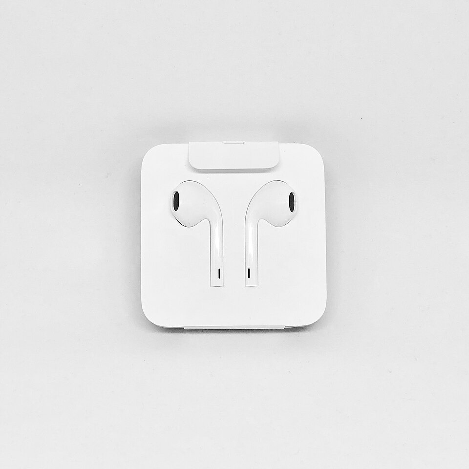
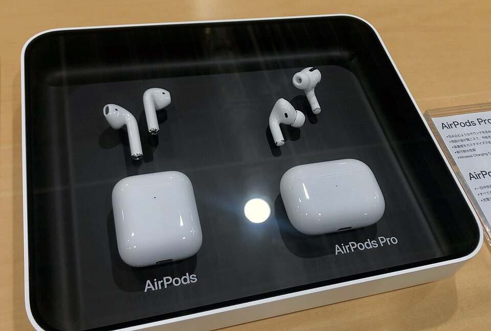
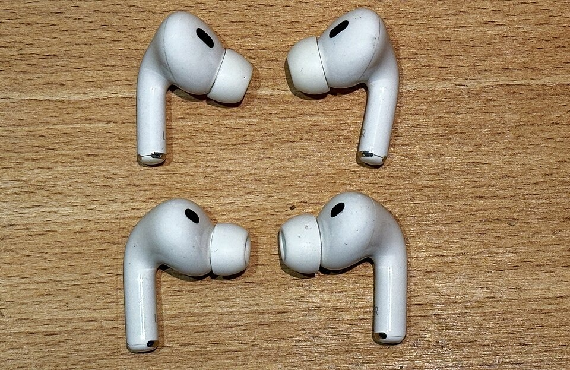

Sin pantalla
Se manejan con gestos en el vástago y con la voz, sin necesidad de mirar nada.
Los auriculares que se manejan con un gesto y se adaptan a lo que oyes

Foto recortada de Burkhard Mücke, Wikimedia Commons (CC BY-SA 4.0).
Los AirPods Pro son unos auriculares inalámbricos de Apple que se meten en el oído y se guardan en un estuche que también los carga. Su rasgo principal es la cancelación activa de ruido: unos micrófonos escuchan el exterior y los auriculares generan un sonido contrario para taparlo.
No tienen botones: se manejan tocando el vástago con los dedos. La tercera generación salió en septiembre de 2025, por unos 249 $, y añade un sensor de pulso para el deporte.
Los auriculares notan solos cuándo se están usando y cambian su comportamiento según la situación.

Foto: Hajoon0102, Wikimedia Commons (CC BY-SA 4.0).
Son un dispositivo que mucha gente usa a diario y que muestra bien varias ideas de la asignatura: interactuar sin pantalla, recibir información por el oído y adaptarse a cada persona.
Se manejan con gestos en el vástago y con la voz, sin necesidad de mirar nada.
Cada gesto va acompañado de un sonido, y así el usuario sabe que el auricular lo ha entendido.
Vienen con varias tallas de almohadilla y comprueban si el ajuste es bueno.
El usuario elige entre aislarse del ruido o seguir oyendo lo que pasa a su alrededor.
Incluyen prueba de audición y ayuda para oír mejor en personas con pérdida auditiva leve o moderada.
La última generación añade traducción en directo y medición del pulso durante el ejercicio.
Los AirPods Pro sustituyen a los auriculares con cable y a los primeros inalámbricos, que tenían cables sueltos, botones pequeños o dejaban entrar todo el ruido.
| Etapa | Dispositivo | Época | Qué aportó | Limitación |
|---|---|---|---|---|
| Con cable | Auriculares del iPod | 2001 | Música portátil con un diseño blanco reconocible | Cable enredado y sin control de ruido |
| EarPods | 2012 | Forma pensada para el oído y mando con botones | Siguen dependiendo del cable | |
| Inalámbricos | AirPods | 2016 | Sin cables y con emparejado automático | No aíslan del ruido y se caen con facilidad |
| AirPods Pro | 2019 | Cancelación de ruido, almohadillas y modo transparencia | Control con sensor de presión que cuesta de encontrar | |
| Con control táctil | AirPods Pro 2 | 2022 | Control táctil con deslizamiento y estuche que suena para localizarlo | Sin sensor de pulso |
| AirPods Pro 3 | 2025 | Mejor cancelación, pulso en el ejercicio y traducción en directo | Batería del estuche menor y precio alto |

Foto: Gregory Varnum, Wikimedia Commons (CC BY-SA 4.0).

Foto: KKPCW, Wikimedia Commons (CC BY-SA 4.0).

Foto: Burkhard Mücke, Wikimedia Commons (CC BY-SA 4.0).
¿Usarías unos auriculares como estos? Rellena el formulario. Es solo una demostración: no hay servidor y los datos no se guardan; al enviarlo, el navegador los añade a la dirección de la página.